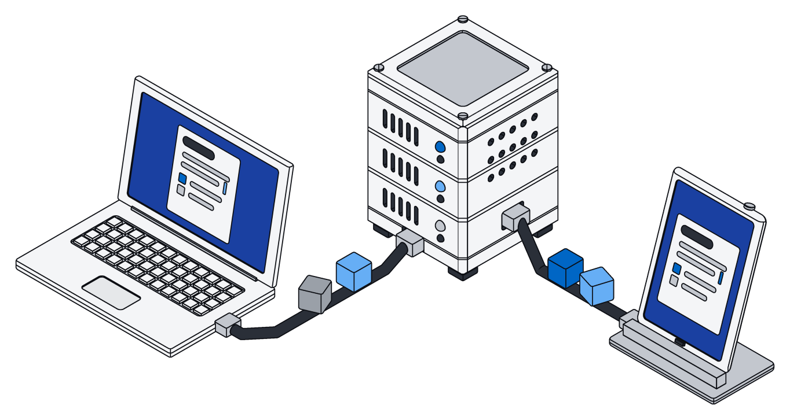
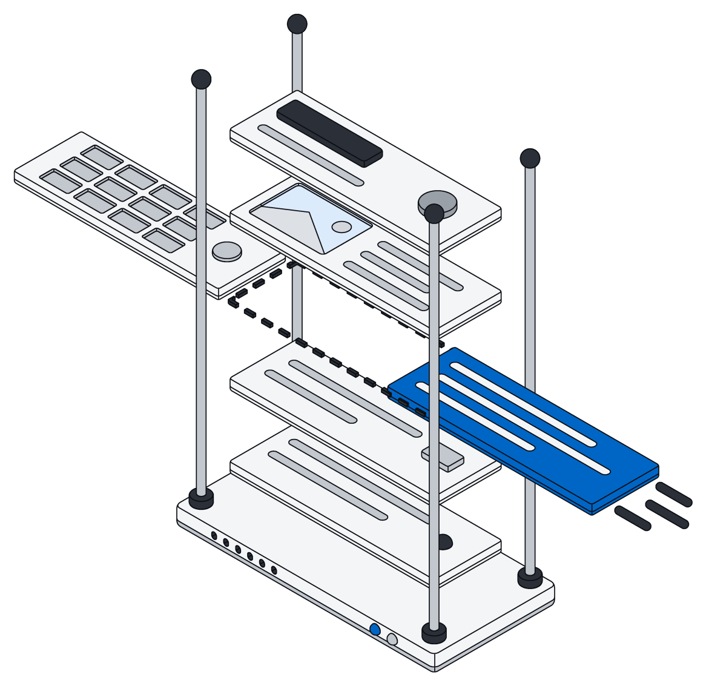
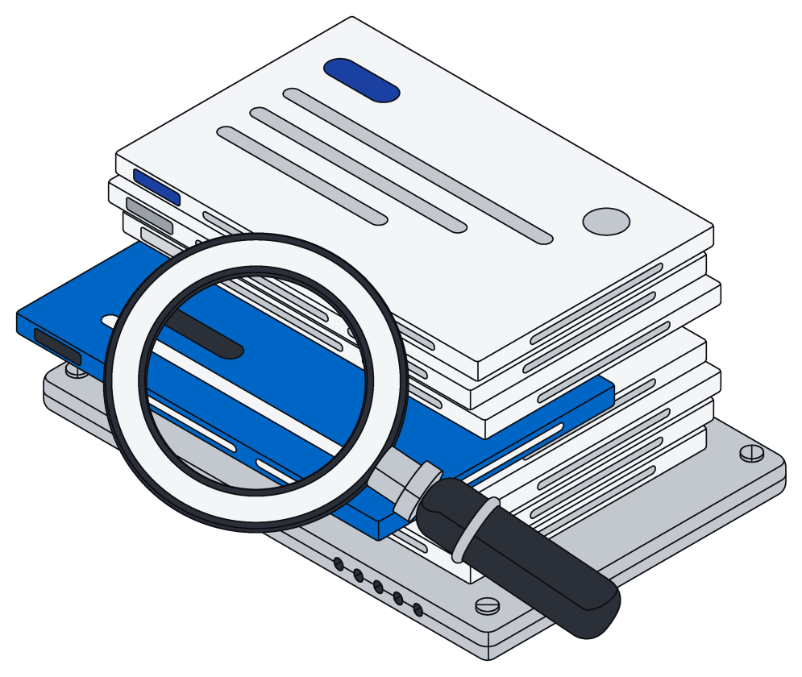
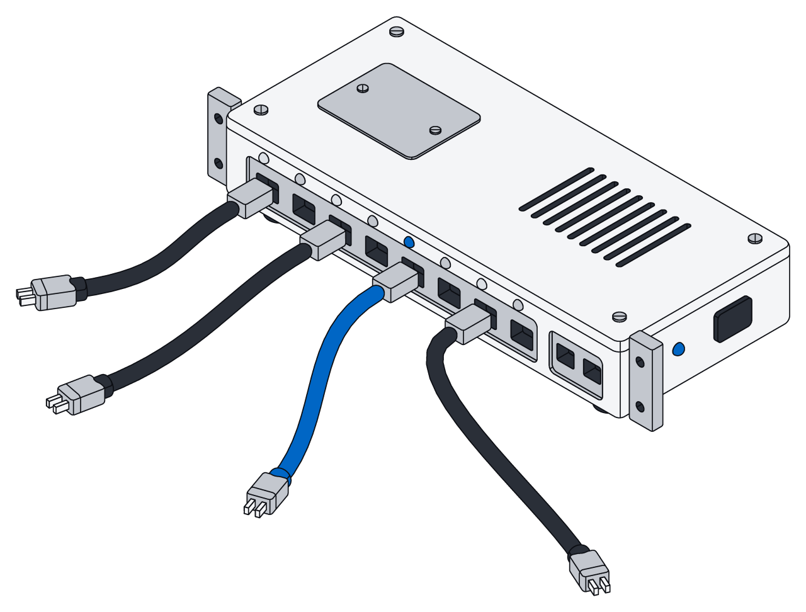

Pages your team and your AI write together.
Your team types in the browser while your AI assistant edits the same page. Every change lands, and nothing gets overwritten.

Live for everyone.
Your words appear the instant you type them, then show up for everyone else on the page.
You see who is here and where they are typing, and edits from different people never clash.

Agents are editors too.
Your AI assistant can add, rewrite or remove any part of a page, even while others keep typing around it.
It shows up in the list of who is here, and its changes appear on everyone's screen just like a teammate's.

Pages and Office files, one way.
The same simple steps that create, read and edit a page also work on Word, Excel and PowerPoint files.
An assistant that can write a page can already fix a contract.

Every word is searchable.
Every page can be found the moment it is saved, right next to your records and files.
Each page belongs to one space, so only the right people see it.

From your screen to every screen.
- A
Type
Your change shows up on your screen at once and heads to Archive.
- B
Merge
Archive weaves it in with everyone else's and saves the page.
- C
Share
Everyone with the page open sees it a moment later, wherever they are.

Write a page in one go.
Your AI assistant can create a page, fill it in, and come back later to change a single line. If anything goes wrong partway, the page stays exactly as it was.
const page = await archive.create("Launch plan.page") await archive.edit(page.id, [ { op: "insert_paragraph_after", text: "Launch plan", style: "heading1" }, { op: "insert_paragraph_after", text: "Ship pricing and docs on Thursday." }, { op: "insert_paragraph_after", text: "Write the changelog entry", style: "todo" }, { op: "insert_paragraph_after", text: "Record the demo", style: "todo" }, ]) return archive.read(page.id)
const [hit] = await archive.search("Launch plan", { type: "file", limit: 1 }) const page = await archive.read(hit.id) const demo = page.paragraphs.find((p) => p.text === "Record the demo") await archive.edit(hit.id, [ { op: "replace_text", para: demo.id, find: "demo", replace: "two-minute demo" }, { op: "insert_paragraph_after", para: demo.id, text: "Post it in #launch", style: "todo" }, { op: "replace_text", find: "Thursday", replace: "Friday" }, ])
{
"type": "page",
"paragraphs": [
{ "id": "1@1", "style": "heading1", "text": "Launch plan" },
{ "id": "13@1", "style": "paragraph", "text": "Ship pricing and docs on Thursday." },
{ "id": "48@1", "style": "todo", "text": "Write the changelog entry" },
{ "id": "75@1", "style": "todo", "text": "Record the demo" }
]
}
Built from simple blocks.
A page is a stack of blocks, like headings, lists and to-dos. Use the built-in styles or name your own.
| Style | For |
|---|---|
| Paragraph | Body text, the default for a new block |
| Headings, in three sizes | Titles and sections |
| Bulleted and numbered | Lists |
| To-do | Checklists your team and your AI work through |
| Quote | Pulled quotes and callouts |
| Code | Snippets, kept exactly as typed |
| Your own | Any style your team or assistant uses, like decision |
See who is here
- Everyone on the page, each with a name and color
- Live cursors and highlights
- People leave the list when they close the page
All or nothing
- Every change lands in full or not at all
- If something goes wrong, nothing is saved
- Everyone sees only finished changes

Spaces
- Every page belongs to one space
- Viewers read, editors write
- Your AI assistants follow the same rules as your team
Questions.
More in the pages docs.
Can my AI assistant edit while I am typing?
Yes. Your edits and its edits are woven together, and it never loses its place, even when you add or delete around it.
What if two of us rewrite the same block?
If you both replace the whole block, the last one saved wins and the words are never jumbled. Smaller edits inside a block keep everyone else's changes to the rest of it.
Does my AI assistant need anything special?
No. It edits pages the same way it edits Word, Excel and PowerPoint files, through one connection.
Do pages support formatting and tables?
Today pages hold headings, lists, to-dos, quotes and code; bold text, nesting and tables are on the way. To keep track of records, use Tables.
Write the first page together.
Invite your team, connect your AI assistant, and open the same page.